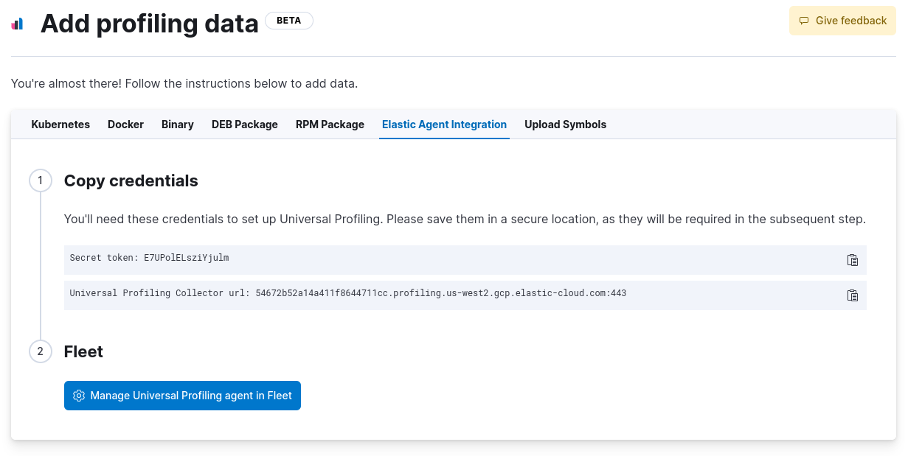

Get started with Universal Profilingedit
This functionality is in beta and is subject to change. The design and code is less mature than official GA features and is being provided as-is with no warranties. Beta features are not subject to the support SLA of official GA features.
On this page, you’ll learn how to configure and use Universal Profiling. This page covers:
- Prerequisites to setting up Universal Profiling
- Setting up Universal Profiling in your Elastic Cloud deployment
- Installing the host-agent
- Installing the Universal Profiling Agent integration
We would appreciate feedback on your experience with this product and any other profiling pain points you may have. See the send feedback section of the troubleshooting documentation for more information.
Prerequisitesedit
Before setting up Universal Profiling, make sure you meet the following requirements:
- An Elastic Stack deployment on Elastic Cloud at version 8.7.0 or higher. Universal Profiling is currently only available on Elastic Cloud.
- The workloads you’re profiling must be running on Linux machines with x86_64 CPUs and kernel version >= 4.15.
- The Integrations Server must be enabled on your Elastic Cloud deployment.
-
Credentials (username and password) for the
superuserElasticsearch role (typically, theelasticuser).
Interpretersedit
Universal Profiling is a system-wide profiling solution with additional support for PHP, Python, Java (or any JVM language), Go, Rust, C/C++, Node.js/V8, Ruby, and Perl.
The minimum supported versions of each interpreter are:
- JVM/JDK: 7
- Python: 3.6
- V8: 8.1.0
- Perl: 5.28
- PHP: 7.3
- Ruby: 2.5
Deployment configuration exampleedit
The following deployment configuration example was tested to support profiling data from a fleet of up to 500 hosts, each with 8 or 16 CPU cores, for a total of roughly 6000 cores:
Component |
Size per zone (memory) |
Zones |
Elasticsearch |
64 GB |
2 |
Kibana |
8 GB |
1 |
Integrations Server |
8 GB |
1 |
Even if you’re profiling a smaller fleet, we recommend configuring at least two zones for Elasticsearch and 4 GB of memory each for the Integrations Server and Kibana.
Set up Universal Profiling on an Elastic Cloud deploymentedit
To set up Universal Profiling on your Elastic Cloud deployment, you need to:
Configure data ingestionedit
After enabling Universal Profiling on your deployment for the first time, select any subheading under Universal Profiling in the navigation menu to open the following page:

Click Set up Universal Profiling to configure data ingestion.
To configure data ingestion, you need elevated privileges, typically the elastic user.
If you’re upgrading from a previous version with Universal Profiling enabled, see the upgrade guide.
When upgrading, you must remove all existing profiling data. We still recommend upgrading as the latest version contains several improvements and new features.
Install the host-agentedit
You have the following options when installing the host-agent:
Install the host-agent in standalone modeedit
The host-agent profiles your fleet. You need to install and configure it on every machine that you want to profile.
The host-agent needs root / CAP_SYS_ADMIN privileges to run.
After clicking Set up Universal Profiling in the previous step, you’ll see the instructions for installing the host-agent. You can also find these instructions by clicking the Add data button in the top-right corner of the page.
The following is an example of the provided instructions for Kubernetes:

Install the host-agent using the Elastic Agentedit
You can also use the Universal Profiling Agent integration through the Elastic Agent to orchestrate to install the host-agent.
To use the Universal Profiling Agent integration, complete the following steps:
-
Copy the
secret tokenandUniversal Profiling Collector urlfrom the Elastic Agent Integration -
Click
Manage Universal Profiling Agent in Fleetto complete the integration. - On the Integrations page, click Add Universal Profiling Agent.
-
In Universal Profiling Agent → Settings, add the information you copied from the Add Data Page:
- Add the URL to the Universal Profiling collector endpoint field.
-
Add the secret token to the Authorization field.

- Click Save and continue.
Host-agent configuration notesedit
Consider the following when configuring your host-agent:
- The instructions in Kibana work well for testing environments. For production environments, we recommend setting an immutable version.
- The host-agent versioning scheme is not aligned with the Elastic Stack version scheme.
-
The OS packages downloaded from
releases.prodfiler.comhave a version in their file name. - You can find a list of container image versions in the Elastic container library repository.
-
For Kubernetes deployments, the Helm chart version is already used to configure the same container image, unless
overwritten with the
versionparameter in the Helm values file. -
For Elastic Stack version 8.8 or higher, use
v3host agents. For version 8.7, usev2.v3host agents are incompatible with 8.7 Elastic Stack versions.